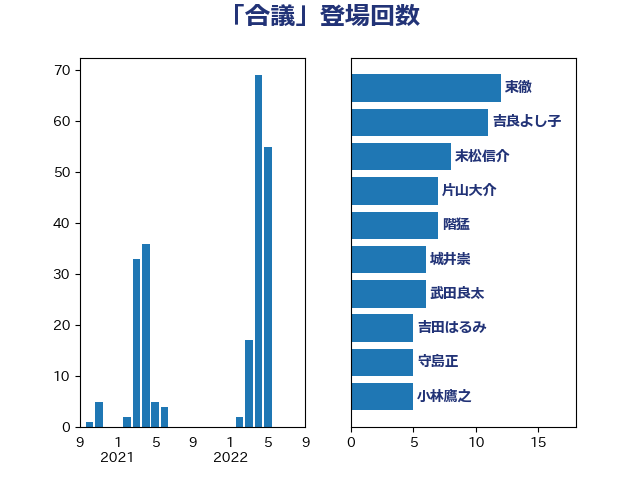

単語「合議」

| 東徹 | 日本維新の会 | 12 回 |
| 吉良よし子 | 日本共産党 | 11 回 |
| 末松信介 | 自由民主党 | 8 回 |
| 片山大介 | 日本維新の会 | 7 回 |
| 階猛 | 立憲民主党 | 7 回 |
| 城井崇 | 立憲民主党 | 6 回 |
| 武田良太 | 自由民主党 | 6 回 |
| 吉田はるみ | 立憲民主党 | 5 回 |
| 守島正 | 日本維新の会 | 5 回 |
| 小林鷹之 | 自由民主党 | 5 回 |
| 小西洋之 | 立憲民主党 | 4 回 |
| 田村まみ | 国民民主党 | 4 回 |
| 舩後靖彦 | れいわ新選組 | 3 回 |
| 古川禎久 | 自由民主党 | 2 回 |
| 寺田学 | 立憲民主党 | 2 回 |
| 岡本あき子 | 立憲民主党 | 2 回 |
| 本村伸子 | 日本共産党 | 2 回 |
| 梶山弘志 | 自由民主党 | 2 回 |
| 中司宏 | 日本維新の会 | 1 回 |
| 吉田忠智 | 立憲民主党 | 1 回 |
| 坂本祐之輔 | 立憲民主党 | 1 回 |
| 塩川鉄也 | 日本共産党 | 1 回 |
| 安江伸夫 | 公明党 | 1 回 |
| 山下雄平 | 自由民主党 | 1 回 |
| 山田勝彦 | 立憲民主党 | 1 回 |
| 山谷えり子 | 自由民主党 | 1 回 |
| 打越さく良 | 立憲民主党 | 1 回 |
| 掘井健智 | 日本維新の会 | 1 回 |
| 斎藤嘉隆 | 立憲民主党 | 1 回 |
| 早稲田ゆき | 立憲民主党 | 1 回 |
| 柴山昌彦 | 自由民主党 | 1 回 |
| 横山信一 | 公明党 | 1 回 |
| 田村憲久 | 自由民主党 | 1 回 |
| 白石洋一 | 立憲民主党 | 1 回 |
| 稲富修二 | 立憲民主党 | 1 回 |
| 菊田真紀子 | 立憲民主党 | 1 回 |
| 萩生田光一 | 自由民主党 | 1 回 |
| 鈴木義弘 | 国民民主党 | 1 回 |